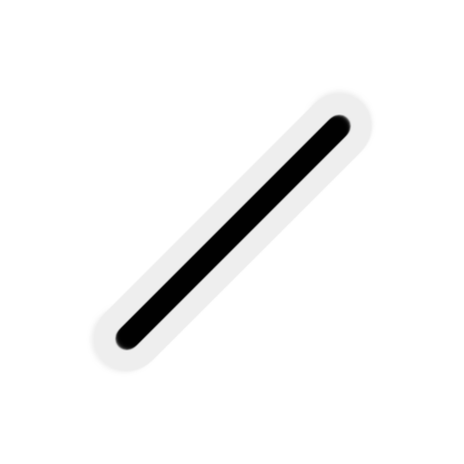
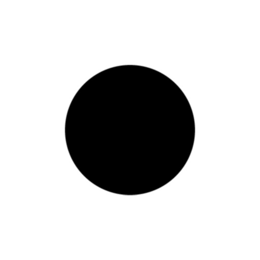
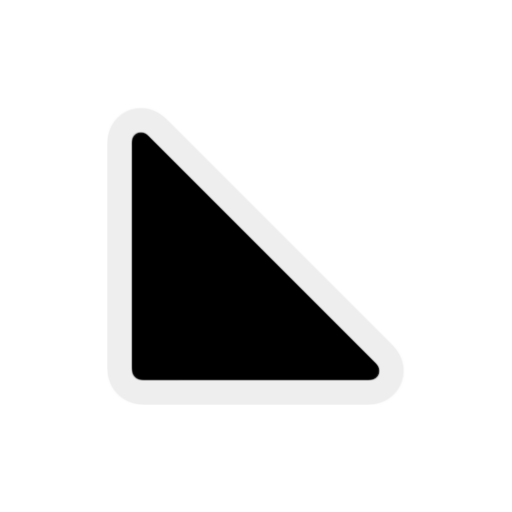
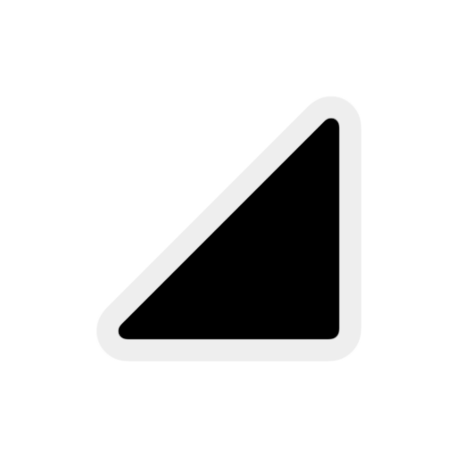

On the Subject of Reflection
Catoptrics goes into great detail about how light travels and reflects. I don’t think it considered what happens when light gets absorbed...
This module contains a 5×5 grid of squares surrounded by numbered cells. To disarm the module, place the correct icon in the grid, then press the base of the status light. A correct submission will disarm the module, whereas an incorrect submission will incur a strike.
When an empty square on the grid is pressed, an icon will be placed at that position based on the last digit of the timer. Use the table below to determine what icon is placed at that position.
If there is already an icon present at the pressed square, it will disappear.
However, if the icon is a light warp(), it will not change.
| Timer last digit | 0 | 1 | 2 | 3 | 4 | 5 | 6 | 7 | 8 | 9 |
|---|---|---|---|---|---|---|---|---|---|---|
| Icon |  |  |  |  |  |  |  |
Rules of the game
A laser will project from each outer cell of the grid. The number in the cell determines how many squares the laser must travel.
The color of the outer cell determines the target destination of the laser:
- Green: the laser exits through another square.
- Yellow: the laser exits through the same square.
- Ash: the laser is absorbed by a black hole. ()
The mirrors (, , ,
and ), the triangles (, ,
, and ) and the square
()
reflect the lasers that hit it. Black holes () absorb the lasers. The lasers will go through one light warp ()
and exit out the other in the same direction.
At any time, it is possible to hold a square on the edge of the board to check the path of the laser. Holding a cell will change its color and value based on the current state of the grid.
On the next page, determine the list of icons used in the puzzle. It is possible that there are multiple solutions to the puzzle, even if the set of icons used is not the same as the generated set. These other solutions will also be accepted.